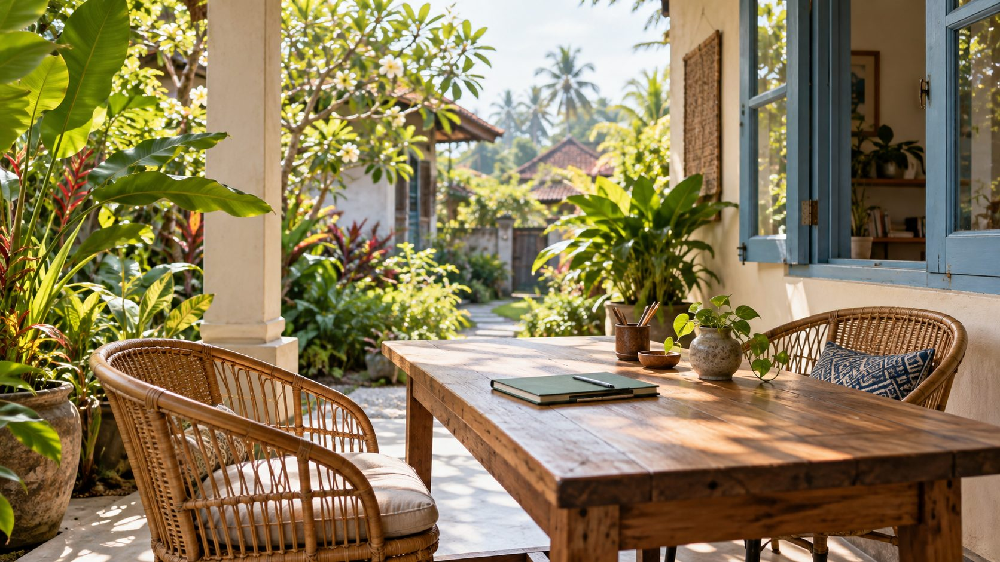

対話から学ぶ
レッスンの人数、時間、進め方を事前に確認できる学校紹介を想定。
SMALL SCHOOL, EVERYDAY ENGLISH
小さな学校での学び方を、
自分のペースに合うか確かめるところから。

WHY A SMALL SCHOOL?
レッスンの人数、時間、進め方を事前に確認できる学校紹介を想定。
宿泊、食事、周辺環境など、授業以外の情報も同じ場所に整理。
魅力だけでなく、事前に確認したい点も明示する構成です。
START HERE
COURSE & STAY
希望期間と目的を整理し、受入れ可能日を確認する想定。
日々の学習量や滞在条件を確認して検討する想定。
部屋・食事・設備・通学方法を正式情報と写真で掲載する欄。
COST CHECKLIST
授業料・滞在費・食費・航空券・保険・現地の諸費用について、含まれるものと別途必要なものを確認する構成です。
具体的な金額、査証・入国要件等は正式情報を確認して掲載します。
費用の確認リストを見る →STORIES
このデモには架空の口コミを掲載していません。本番では許可された体験談を、目的・期間・学習前の不安から探せるよう整理します。
記事の分類・回遊を体験する →FAQ
このデモでは「未定」を選んで、相談したい項目を整理できます。実際の受付条件は正式サイトでご案内する想定です。
申し込み・送信機能はありません。制作例として操作だけを体験できます。
NEXT STEP
目的と期間を選ぶと、相談時に確認したい項目を表示します。個人情報の入力はありません。
相談の準備をする